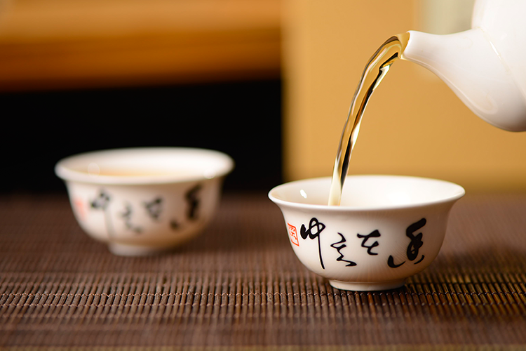
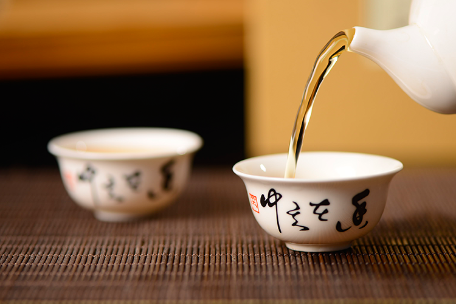

更多
关于白茶的历史究竟起源于何时?茶学界有些不同的观点。
有的学者认为白茶始于神农尝百草时期。上古时代尚无制茶法，人们运用自然晾青茶叶的“萎凋”工序，源于一种古老的制草药所采用的方法。由此可见，最 早的茶按制作方式来看应该是白茶，或者说中国的茶叶史是随着“古代白茶”的诞生而开创的。
湖南农业大学杨文辉教授认为白茶在4000多年前就已有之，比绿茶诞生还要早2000多年。理由是先人用采摘的茶叶最初作药用，南于茶树萌发新芽有季节性， 为了随时都能喝到茶叶，便将采集的幼嫩茶叶晒干收藏起来，干晒的方法属于白茶制法的范畴，这是茶叶加工的开端。因此，杨文辉教授认为白茶应始于神农尝百 草时期。
史书中曾载：“神农尝百草，日遇七十二毒，得茶而解之”神农尝百草遇毒时，正是从茶树上摘下鲜叶咀嚼而解毒，从而认识了茶的药用价值。从此之后， 人们开始采摘茶树上的鲜叶，自然晾干收藏。茶学专家陈椽教授同样认为“如现时制白茶，可以说是制茶起源时期”。
福鼎有这样一个传说，太姥山古名才山，尧帝时，有一位蓝姑在此居住，以种蓝为业，为人乐善好施，深得人心。她将所种的绿雪芽茶作为治麻疹的良药，救 活了无数小儿。人们感恩戴德，把她奉为神明，称其为太母，这座山也因此名为太母山。到汉武帝时，派遣侍中东方朔到各地授封天下名山，于是太母山被封为天 下三十六座名山之首，并正式改名为太姥山。古白茶的诞生与福鼎民间流传的太姥娘娘之蓝姑传说不谋而合。
著名作家王宏甲在《中国有个三都澳》一文中写道：“我以为晒干收藏之白茶是中国茶的祖先，四千多年前的蓝姑岂不是中国茶饮的创始人把茶的药用引入民 间生活最终成为茶饮，舍福鼎‘蓝姑娘——太姥娘娘’，还有谁！我期盼宁德福鼎人有一天在巨大的太姥娘娘雕像下庄严地刻上：人类茶之母。这已然是传承了四 千多年的非物质文化遗产。”
也有学者认为，白茶的起源至少在隋唐之前。唐代的陆羽在《茶经.七之事》曾引用隋代《永嘉图经》的一句话：“永嘉县东三百里有白茶山”陈椽教授在《茶 业通史》中指出永嘉县东三百里是大海，应为南三百里之误，南三百里就是福建的福鼎(唐为长溪县辖区)，系白茶原产地。可见唐代闽东已有白茶品种。民国《太 姥山伞志》的作者卓剑舟诗中有“闻道郑渔仲，品泉兰水涯，可曾到此洞，一试绿雪芽”之句，郑渔仲即宋朝史学家莆田人郑樵，从诗句中可以看出卓剑舟认为宋 朝的郑樵曾品饮过“绿雪芽”白茶。另据央视报道，2009年，考古工作者在曾经创建了西安碑林。
《煮泉小品》中记载：“茶者以火作者为次，生日西者为上，亦近自然，且断火气耳……生晒茶沦于瓯中，则旗枪舒畅，青翠鲜明，尤为可爱。”其中“生晒者 为上，亦近自然”就是白茶的加工方法，表明白茶的品质接近自然，品质最好。这是有关白茶生产与品质的较早历史记载。后来，明代闻龙在《茶笺》(1630年)进 一步追述“田子以生晒不炒不揉者为佳，亦未之试耳”。这种“不炒不揉的制茶方法”，正是当今白茶制法的特点，即将“取芽”“生晒”“不炒不揉”融为一体。 明清时期，太姥山茶(尤其绿雪芽)的声名更盛。谢肇涮在《太姥山志》里多处提到太姥山产茶。陆应阳在《广舆记》中写道：“福宁州太姥山出名茶，名绿雪芽。清 初周亮工《闽小记》、郭柏苍《闽产录异》、吴振臣《闽游偶记》、邱古园《太姥山指掌》等文献中都有关于“绿雪芽茶是也”的记载。民国卓剑舟著《太姥山全 志》时就已考证出：“绿雪芽，今呼白毫。香色俱绝，而犹以鸿雪洞产者为最。功同犀角，为麻疹圣药。运售国外，价与金埒。”太姥山一片瓦寺(鸿雪洞旁)的僧人 至今仍沿用古法制作绿雪芽。
清康熙二十二年(1683年)，福鼎沙埕港设贸易口岸，出口茶叶。清嘉庆初年，“白毫银针”被誉为世界名茶，是英国女王酷爱的珍品。1910年起，“白毫银 针”畅销欧美。清末民初时，福鼎白茶已远销欧亚39个国家和地区。《太姥山全志》曾有记录：“运售国外，价与金埒。”2011年，在西泠印社春拍卖场上，有 数品民国四年(1915年)参展“巴拿马万国博览会”的“精茶”原装登场，1915年英文印鉴宛在。其中，福建的马玉记白茶荣获当年巴拿马万国博览会的金牌奖章， 此款参展茶采用精选芽尖制成，虽时光流逝百年但其茶身的白毫依然清晰可见，保存之完好堪称奇迹。根据福鼎点头柏柳村梅伯珍(梅筱溪)在民国时写的《筱溪陈 情书》中所记，福建马玉记白茶都是由梅筱溪提供的。
种种资料表明，福鼎茶史遗存丰富，一些古籍记载和论述无不彰显着福鼎白茶的悠久历史以及在中国茶文化史上的重要地位。可以毫不夸张地说，福鼎茶叶的 历史，正是中国茶叶发展史的缩影。因此，品饮白茶，是个缅怀祖先勤劳智慧、体验茶道古典情怀的过程。
喜欢喝白茶的朋友还确实不少，关于福鼎鼎枝芽白茶的泡法，我们要注意一下几点，福鼎白茶怎么冲泡？
 
